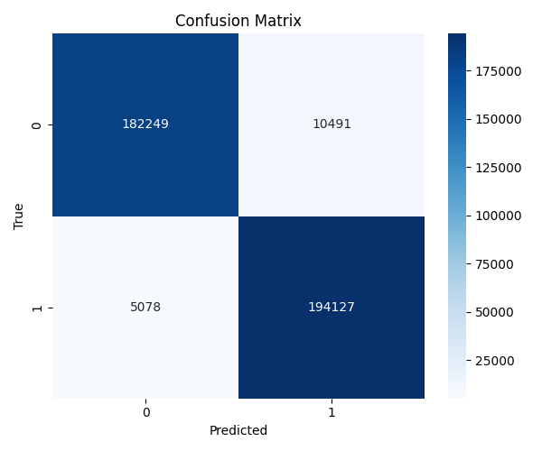
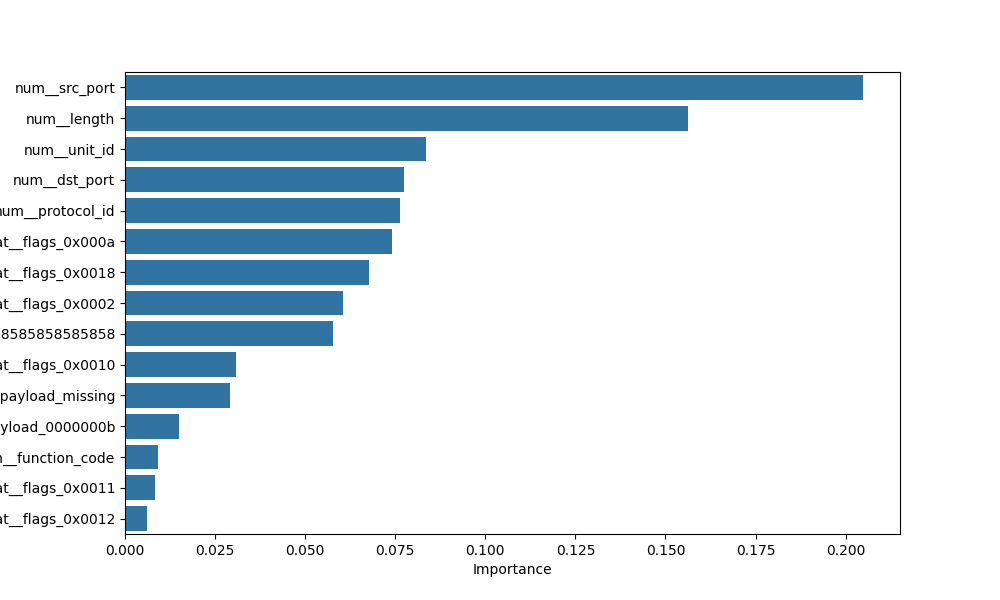

📊 Relatório de Treino - Mod-Sentinel
Gerado a 2025-10-09T08:36:03.600203Z
📈 Métricas
precision recall f1-score support
0 0.97 0.95 0.96 192740
1 0.95 0.97 0.96 199205
accuracy 0.96 391945
macro avg 0.96 0.96 0.96 391945
weighted avg 0.96 0.96 0.96 391945
📊 Matriz de Confusão

🏗️ Importância das Features

🧾 Ficheiros de treino
- dos_modbus_fc6.csv — 87665 linhas
- dos_synflood.csv — 120569 linhas
- dos_tcpflood.csv — 46833 linhas
- mitm_injection.csv — 36660 linhas
- modbus_reader.csv — 33582 linhas
- no_attack.csv — 28773 linhas
📁 Ficheiros de teste
- dos_modbus_fc6.csv — 87814 linhas
- dos_synflood.csv — 131513 linhas
- dos_tcpflood.csv — 76055 linhas
- mitm_injection.csv — 36625 linhas
- modbus_reader.csv — 33827 linhas
- no_attack.csv — 26111 linhas